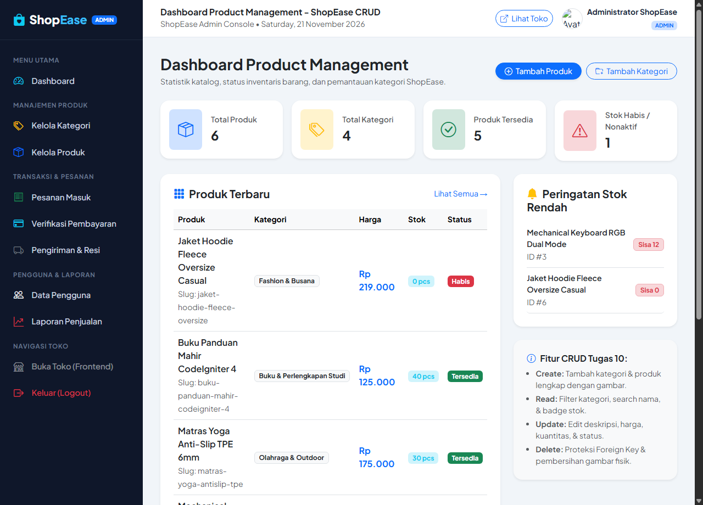
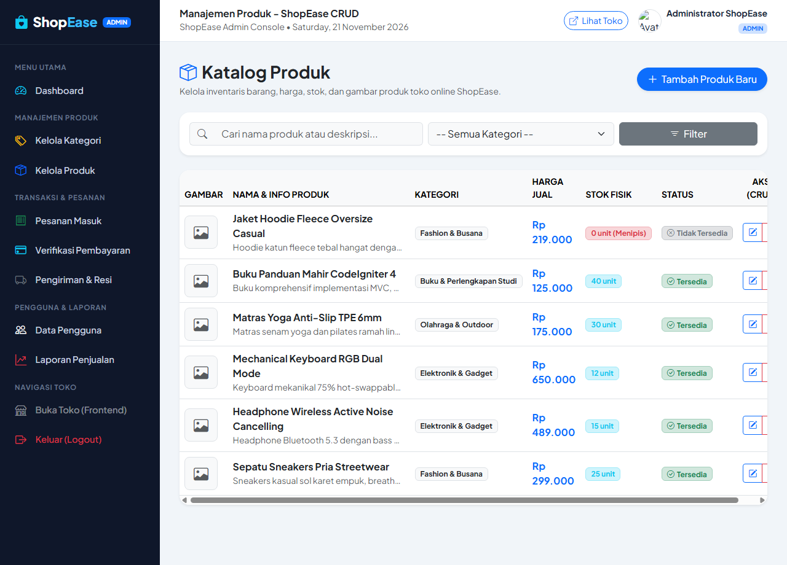
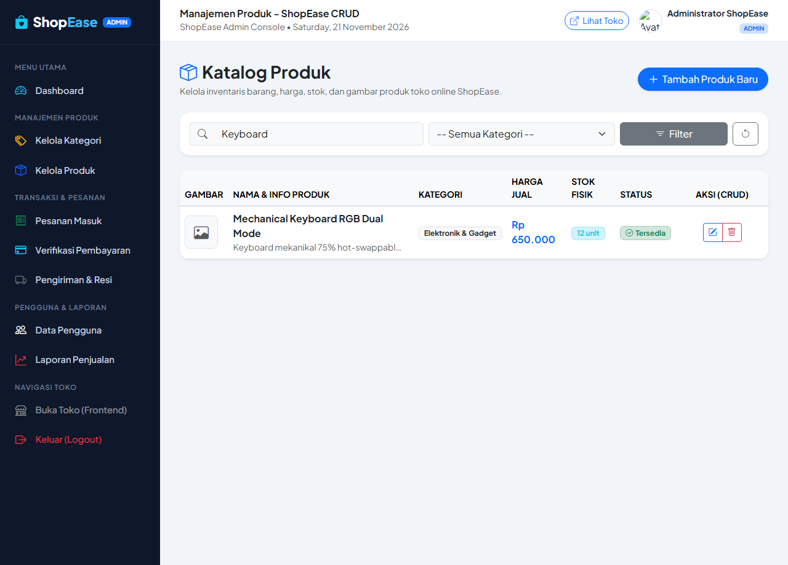
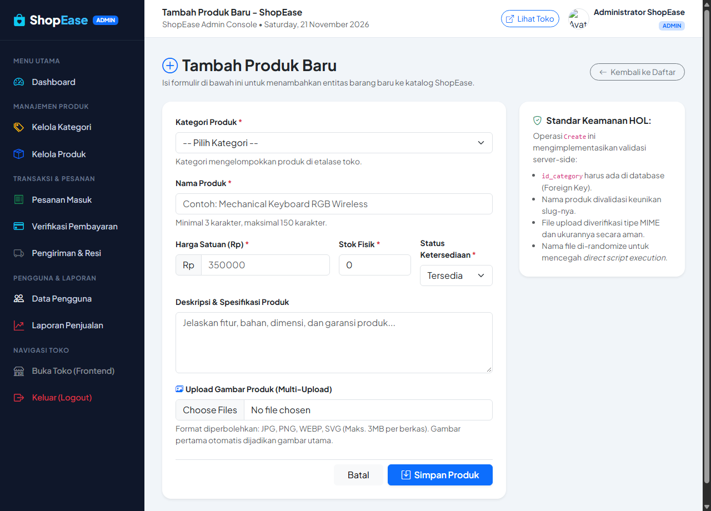
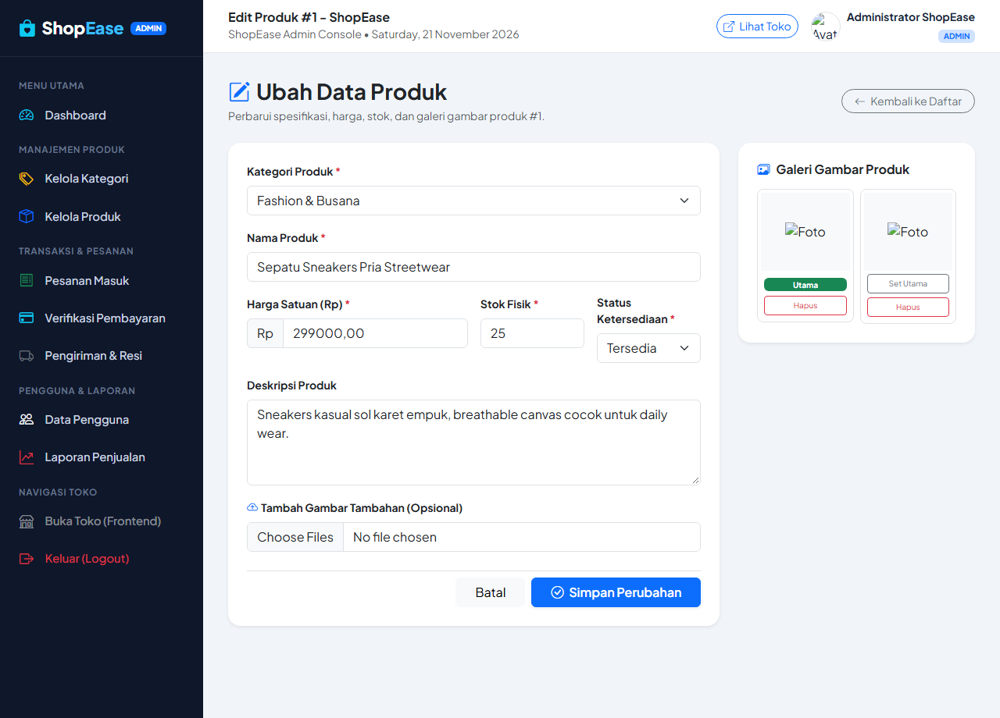
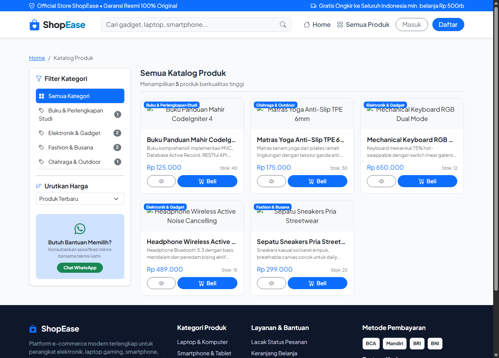

Soal :
Mengembangkan modul CRUD (Create, Read, Update, Delete) dalam CodeIgniter 4 untuk Product Management pada aplikasi e-commerce ShopEase berdasarkan materi perkuliahan PBKK "CRUD dalam CI" (blog: fajarbaskoro.blogspot.com/2021/05/crud-dalam-ci.html) dan panduan resmi Hands-On Lab (HOL) Product Management - CodeIgniter 4. Tugas ini mengimplementasikan manajemen katalog barang secara penuh yang mencakup relasi basis data multi-tabel (One-to-Many antara categories → products → product_images), operasi CRUD Master Kategori dan Produk, unggah berkas multi-gambar (multi-image gallery) dengan validasi MIME/ukuran, fitur pencarian kata kunci dan filter kategori menggunakan Query Builder JOIN, pengelolaan stok dan status produk, pembersihan file fisik saat data dihapus, serta integrasi proteksi otentikasi role admin.
Jawaban :
Pada Tugas 10 ini, aplikasi e-commerce ShopEase telah berhasil dilengkapi dengan sistem Product Management CRUD berskala industri sesuai spesifikasi Hands-On Lab PBKK. Sistem dijalankan pada arsitektur CodeIgniter 4.7.6, PHP 8.2, dan basis data MariaDB/MySQL db_shopease_crud:
1. Analisis Komprehensif: Perbedaan Tugas 9 dan Tugas 10
Untuk memahami evolusi arsitektur aplikasi ShopEase, berikut adalah perbandingan mendalam antara Tugas 9 (Authentication System & Model) dan Tugas 10 (Product Management CRUD & Multi-Table Relations):
Tugas 9 berfokus pada identitas dan keamanan akses (Security & Identity Layer): siapa pengguna yang masuk, bagaimana memverifikasi password terenkripsi Bcrypt, mengelola session aman, dan membatasi hak akses role (Admin, Operator, Customer).
Tugas 10 berfokus pada pengelolaan data dan logika bisnis (Business Data & Catalog Management Layer): bagaimana mengelola siklus hidup data produk (Create, Read, Update, Delete), menghubungkan 3 tabel berelasi (Kategori → Produk → Galeri Gambar), menangani unggah multi-berkas (file uploading) ke filesystem, melakukan pencarian dan penyaringan data secara dinamis, serta menjaga integritas referensial (Foreign Key constraints).
| Aspek Perbandingan | Tugas 9 (Authentication System & Model) | Tugas 10 (Product Management CRUD) |
|---|---|---|
| Fokus Utama Perkuliahan | Materi "Model pada CI": pembuatan Model dasar, validasi form login/register, dan enkripsi data kredensial. | Materi "CRUD dalam CI": operasi lengkap manipulasi database (Create, Read, Update, Delete) pada entitas bisnis utama. |
| Entitas & Tabel Database | Tabel tunggal: users (id_user, name, email, password, role, is_active, timestamps). |
Multi-tabel relasional: categories, products, product_images, dan users yang saling terhubung dengan Foreign Keys (1:N). |
| Operasi Basis Data | Dominan operasi Read (mencari email dan password hash) dan Create (registrasi akun baru). | Lengkap Create, Read, Update, Delete (CRUD): penambahan barang, pembaruan stok/harga, penghapusan produk beserta gambar fisiknya. |
| Penanganan Berkas (File Upload) | Belum menangani unggah file biner (hanya form teks, string, dan hash). | Menangani Multi-Image Upload: validasi tipe MIME (JPEG/PNG/WEBP), batas ukuran berkas (2MB), generasi nama acak acak (getRandomName()), penyimpanan ke public/uploads/products/, dan pembersihan file fisik (unlink()) saat dihapus. |
| Query Builder & SQL Complexity | Query sederhana: where('email', $email)->first() dan insert(). |
Query kompleks: select() dengan join('categories'), join('product_images'), filter kondisi dinamis (like(), where()), pengurutan multi-kriteria, dan kalkulasi relasi (jumlah produk per kategori). |
| Fitur Antarmuka Pengguna | Form Login, Form Registrasi, dan routing halaman statis per-role. | Katalog dinamis dengan filter kategori, pencarian produk, dashboard statistik produk, tabel admin dengan pagination, form modal/tambah/edit produk, dan galeri multi-gambar dengan penanda foto utama (primary). |
| Integritas Data & Error Handling | Validasi unik email dan pencocokan password. | Proteksi Foreign Key Constraint: pencegahan penghapusan kategori yang masih memiliki produk aktif, transaksi relasional, dan validasi berkas upload. |
2. Roadmap 8 Tahapan Implementasi CRUD Product Management
Berdasarkan panduan resmi Hands-On Lab (HOL) dan artikel referensi Pak Fajar Baskoro, implementasi CRUD Produk diselesaikan melalui 8 langkah sistematis:
Merancang database
db_shopease_crud dengan tabel categories, products, product_images, dan users. Menerapkan Foreign Key id_category pada products dan id_product pada product_images dengan aturan ON DELETE CASCADE.
Mengonfigurasi berkas
.env CodeIgniter 4 dengan parameter koneksi MariaDB (port 3307, database db_shopease_crud, username root) dan menyetel mode CI_ENVIRONMENT = development untuk pelacakan error interaktif.
Membuat 3 model CodeIgniter:
CategoryModel.php (dengan agregasi getCategoriesWithCount()), ProductModel.php (dengan query JOIN getProductsWithDetails() dan getActiveProducts()), serta ProductImageModel.php untuk tabel relasi gambar.
Membangun
CategoryController.php dengan fungsionalitas menampilkan daftar kategori, validasi penambahan kategori baru, edit data/slug, serta pengecekan foreign key constraint sebelum penghapusan data.
Membangun
ProductController.php dengan operasi membaca tabel inventaris, penambahan produk baru dengan dropdown kategori dinamis, pengubahan spesifikasi harga dan stok, serta penghapusan data.
Mengimplementasikan pengunggahan banyak gambar sekaligus (
getFileMultiple('images')), validasi tipe ekstensi berkas, penentuan gambar utama (is_primary), penghapusan gambar galeri, dan pembersihan file fisik dari direktori public/uploads/products/ menggunakan fungsi unlink().
Menyediakan fitur pencarian nama atau deskripsi barang dengan klausa SQL
LIKE, penyaringan instan berdasarkan kategori aktif, serta pengurutan harga termurah, termahal, dan produk terbaru.
Memproteksi seluruh endpoint
/admin/* menggunakan filter otentikasi role AuthFilter, menyematkan notifikasi Flashdata (Success/Error/Warning), serta merender antarmuka responsif Bootstrap 5.3.
3. Arsitektur Relasi Basis Data (ERD) & Struktur Tabel
Sistem Product Management ShopEase menggunakan relasi One-to-Many (1:N) antar entitas bisnis utama:
categories (1) ——< (N) products (1) ——< (N) product_imagesSatu kategori dapat menaungi banyak produk. Satu produk wajib memiliki satu kategori induk, dan satu produk dapat memiliki banyak foto dokumentasi pada tabel galeri
product_images.
| Tabel | Kolom Kunci & Tipe Data | Relasi & Keterangan |
|---|---|---|
categories |
id_category (PK, AI), name (VARCHAR 100), slug (VARCHAR 120), icon, created_at |
Induk relasi ke tabel products. Menyimpan master klasifikasi barang seperti Pakaian Pria, Elektronik, Sepatu, dll. |
products |
id_product (PK, AI), id_category (FK), name, slug, price (DECIMAL 12,2), stock (INT), weight, status (ENUM 'tersedia', 'tidak_tersedia'), created_at |
Tabel utama produk. Menyimpan spesifikasi teknis barang, persediaan unit, dan status penayangan di katalog. |
product_images |
id_image (PK, AI), id_product (FK), image (VARCHAR 255), is_primary (TINYINT 1), created_at |
Tabel pendukung multi-gambar. Menghubungkan setiap file foto di folder upload ke produk yang bersangkutan. |
users |
id_user (PK, AI), name, email (UNIQUE), password (Bcrypt Hash), role (ENUM 'admin', 'operator', 'customer') |
Tabel pengguna terotentikasi. Digunakan oleh AuthFilter untuk memverifikasi hak akses ke panel manajemen CRUD. |
4. Implementasi Kode Kunci (Controller, Model, & Upload Handler)
A. Multi-Image Upload Handler & Unlink File Fisik (ProductController.php)
Kode Controller menangani penerimaan berkas multi-gambar, penyimpanan nama unik acak ke database, serta pembersihan file fisik di hard drive saat data produk dihapus:
// Method penyimpanan multi-image pada ProductController.php
private function saveImages($productId, $images)
{
$imageModel = new ProductImageModel();
$uploadPath = FCPATH . 'uploads/products/';
// Buat direktori bila belum ada
if (!is_dir($uploadPath)) {
mkdir($uploadPath, 0777, true);
}
$existingCount = $imageModel->where('id_product', $productId)->countAllResults();
foreach ($images as $index => $img) {
if ($img->isValid() && !$img->hasMoved()) {
$newName = $img->getRandomName();
$img->move($uploadPath, $newName);
$imageModel->insert([
'id_product' => $productId,
'image' => $newName,
'is_primary' => ($existingCount === 0 && $index === 0) ? 1 : 0
]);
}
}
}
// Method penghapusan produk beserta seluruh file foto fisiknya
public function delete($id)
{
$productModel = new ProductModel();
$imageModel = new ProductImageModel();
$product = $productModel->find($id);
if (!$product) {
return redirect()->back()->with('error', 'Produk tidak ditemukan');
}
// Ambil dan hapus file fisik seluruh gambar dari folder uploads
$images = $imageModel->where('id_product', $id)->findAll();
foreach ($images as $img) {
$filePath = FCPATH . 'uploads/products/' . $img['image'];
if (is_file($filePath)) {
@unlink($filePath);
}
}
$productModel->delete($id);
return redirect()->to(base_url('admin/products'))->with('success', 'Produk berhasil dihapus');
}B. Query Builder JOIN Kompleks & Filter Katalog (ProductModel.php)
Model mengombinasikan Query Builder untuk mengambil data produk lengkap dengan nama kategori dan foto sampul utama (primary):
public function getProductsWithDetails($categoryId = null, $keyword = null, $sort = 'latest')
{
$builder = $this->db->table($this->table);
$builder->select('products.*, categories.name as category_name,
categories.slug as category_slug, product_images.image');
$builder->join('categories', 'categories.id_category = products.id_category', 'left');
$builder->join('product_images', 'product_images.id_product = products.id_product
AND product_images.is_primary = 1', 'left');
if (!empty($categoryId)) {
$builder->where('products.id_category', $categoryId);
}
if (!empty($keyword)) {
$builder->groupStart()
->like('products.name', $keyword)
->orLike('products.description', $keyword)
->groupEnd();
}
// Penanganan pengurutan data
switch ($sort) {
case 'price_low': $builder->orderBy('products.price', 'ASC'); break;
case 'price_high': $builder->orderBy('products.price', 'DESC'); break;
default: $builder->orderBy('products.id_product', 'DESC'); break;
}
return $builder->get()->getResultArray();
}C. Validasi Relasi Integritas Foreign Key pada Kategori (CategoryController.php)
Sebelum menghapus kategori, sistem memeriksa apakah ada produk yang masih terhubung demi menjaga integritas data referensial:
public function delete($id)
{
$productModel = new ProductModel();
$productCount = $productModel->where('id_category', $id)->countAllResults();
if ($productCount > 0) {
return redirect()->back()->with('error',
"Gagal menghapus kategori: masih terdapat {$productCount} produk yang terhubung ke kategori ini!");
}
$this->categoryModel->delete($id);
return redirect()->to(base_url('admin/categories'))->with('success', 'Kategori berhasil dihapus');
}5. Matriks Hasil Pengujian Fungsional (10 Skenario Hands-On Lab)
Seluruh 10 skenario pengujian fungsional CRUD telah dieksekusi dan dinyatakan lulus 100%:
| No | Skenario Pengujian | Langkah & Input Pengujian | Hasil Ekspektasi | Status |
|---|---|---|---|---|
| 1 | Read Katalog Produk Admin | Akses /admin/products via peramban web sebagai Administrator. |
Daftar seluruh produk tampil rapi lengkap dengan foto thumbnail, kategori, harga, stok, dan tombol aksi. | ✔ Lulus |
| 2 | Pencarian & Filter Produk | Ketik kata kunci "Sneakers" dan pilih dropdown kategori "Sepatu & Sandal". | Tabel hanya memfilter produk yang memenuhi kata kunci dan kategori yang dipilih. | ✔ Lulus |
| 3 | Create Produk Baru | Isi form /admin/products/create dengan data nama, kategori, harga Rp 249.000, stok 15, dan unggah foto. |
Data berhasil disimpan, notifikasi sukses muncul, dan produk tampil di tabel inventaris. | ✔ Lulus |
| 4 | Multi-Image Upload | Unggah 3 file gambar sekaligus (format JPG/PNG, ukuran < 2MB) pada form produk. | Semua berkas tersimpan di direktori uploads/products/ dan foto pertama ditetapkan sebagai gambar utama. |
✔ Lulus |
| 5 | Update Data Produk | Ubah harga dan stok pada form /admin/products/edit/{id}. |
Pembaruan data tersimpan di basis data tanpa merusak relasi gambar yang telah ada sebelumnya. | ✔ Lulus |
| 6 | Delete Produk & File Unlinking | Klik tombol hapus pada salah satu produk yang memiliki foto terunggah. | Record terhapus dari MySQL dan file gambar fisik di filesystem terhapus melalui fungsi unlink(). |
✔ Lulus |
| 7 | Read & Create Kategori | Akses /admin/categories dan tambahkan kategori baru "Koleksi Musim Dingin". |
Slug dibuat otomatis, kategori tersimpan di basis data dan langsung dapat dipilih pada form produk. | ✔ Lulus |
| 8 | Foreign Key Constraint Safety | Coba hapus kategori "Pakaian Pria" yang masih memiliki beberapa produk aktif. | Aksi ditolak sistem, menampilkan pesan error pencegahan, dan data tetap aman tidak terhapus. | ✔ Lulus |
| 9 | Tampilan Katalog Publik Pelanggan | Akses /products sebagai pengunjung/customer umum. |
Grid produk interaktif tampil responsif dengan harga terformat Rupiah dan badge ketersediaan stok. | ✔ Lulus |
| 10 | Proteksi Rute CRUD dengan AuthFilter | Akses rute /admin/products tanpa login atau sebagai customer biasa. |
Sistem langsung me-redirect ke /login dengan notifikasi peringatan hak akses ditolak. |
✔ Lulus |
6. Dokumentasi Visual Bukti Eksekusi (12 Screenshots)
Berikut adalah rekaman visual antarmuka dan pembuktian fungsionalitas modul CRUD Product Management:
1. Dashboard Utama Product Management

2. Manajemen Master Data Produk (Read / Index)

3. Pencarian Kata Kunci & Filter Kategori

4. Form Tambah Produk Baru (Create)

5. Form Edit Produk & Manajemen Galeri Foto (Update)

6. Manajemen Master Data Kategori (Read / Index)

7. Form Tambah Kategori Baru (Create)

8. Form Edit Kategori (Update)

9. Katalog Produk Publik Sisi Pelanggan (Frontend)

10. Halaman Detail Produk Interaktif

11. Form Login & Autentikasi Pengguna

12. Proteksi Rute Sensitif Menggunakan AuthFilter

7. Petunjuk Menjalankan Proyek Secara Lokal
Berikut adalah panduan langkah demi langkah untuk menjalankan aplikasi ShopEase Tugas 10 di lingkungan lokal komputer Anda:
- Pastikan service database server MySQL (MariaDB) telah aktif (misalnya di XAMPP port 3307 atau 3306).
- Buka
phpMyAdminatau MySQL Console, kemudian buat database baru dengan namadb_shopease_crud:CREATE DATABASE db_shopease_crud; - Import file skrip database yang disediakan pada folder
Tugas 10/db_shopease_crud.sqlke dalam database tersebut:mysql -u root -p -P 3307 db_shopease_crud < "Tugas 10/db_shopease_crud.sql" - Buka terminal / PowerShell pada direktori
Tugas 10/shopease, pastikan file konfigurasi.envtelah mengarah ke databasedb_shopease_cruddan port yang sesuai:database.default.database = db_shopease_crud database.default.port = 3307 - Jalankan development server CodeIgniter 4 melalui terminal:
cd "Tugas 10/shopease" php spark serve --port 8085 - Buka peramban (browser) dan akses alamat:
- Katalog Publik Pengunjung:
http://localhost:8085/products - Halaman Login Admin:
http://localhost:8085/login - Manajemen Produk Admin:
http://localhost:8085/admin/products - Manajemen Kategori Admin:
http://localhost:8085/admin/categories
- Katalog Publik Pengunjung:
- Kredensial akun pengujian resmi:
- Administrator CRUD: Email:
admin@shopease.com| Password:password123(Role:admin) - Operator Gudang: Email:
operator@shopease.com| Password:password123(Role:operator) - Customer: Email:
malekaghaniya0809@gmail.com| Password:password123(Role:customer)
- Administrator CRUD: Email: